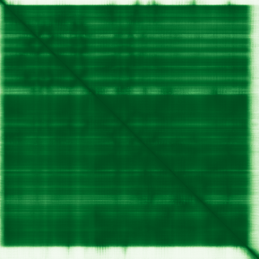

type: protein-evaluation gene: "CSNK2A2" date: 2026-06-01 tags: [protein-scout, nucleoplasm, evaluation] status: scored ---
CSNK2A2 核蛋白评估报告
1. 基本信息
| 项目 | 内容 |
|---|---|
| 基因名 / 别名 | CSNK2A2 / CK2A2 |
| 蛋白全名 | Casein kinase II subunit alpha' |
| 蛋白大小 | 350 aa / 41.2 kDa |
| UniProt ID | P19784 |
2. 评分总览
| 维度 | 得分 | 新权重 | 加权后 | 关键证据摘要 |
|---|---|---|---|---|
| 核定位特异性 | 5/10 | ×4 | 20.0 | UniProt Nucleus+Cytoplasm (ECO:0000250)；GO-CC nucleoplasm TAS, nucleus IDA, chromatin IEA；HPA 无 IF 数据/无定位 |
| 蛋白大小 | 7/10 | ×1 | 7.0 | 350 aa, 41.2 kDa，中等大小蛋白激酶 |
| 研究新颖性 | 6/10 | ×5 | 30.0 | PubMed strict=57, broad=68 |
| 三维结构 | 9/10 | ×3 | 27.0 | AlphaFold pLDDT 94.1 (pct>90: 92.3%)；PDB 33 个结构 (X-ray, 最高 0.83A) |

| 调控结构域 | 5/10 | ×2 | 10.0 | Protein kinase domain (PF00069, IPR000719)；广谱 Ser/Thr 激酶，信号传导 |
| PPI 网络 | 8/10 | ×3 | 24.0 | STRING: CSNK2B (0.999 exp 0.958), CSNK2A1 (0.993), TP53 (0.939 exp 0.622)；IntAct 15 条；UniProt 9 条 |
| 加权总分 | 118/180** | |||
| 互证加分 | +0.0 | |||
| 归一化总分 (÷1.83) | 64.5/100** |
3. 详细分析
3.1 核定位证据
| 来源 | 定位 | 可信度 |
|---|---|---|
| UniProt | Nucleus (ECO:0000250), Cytoplasm (ECO:0000250) | 低 (序列相似性推断) |
| GO-CC | nucleoplasm (TAS:Reactome), nucleus (IDA:UniProtKB), chromatin (IEA:Ensembl), cytosol (IBA:GO_Central), protein kinase CK2 complex (ISS:ComplexPortal) | 中 |
| Protein Atlas (IF) | 无 IF 数据，无定位注释，reliability=null | 未确认 |
HPA IF 状态: HPA IF 原图未可靠获取（HPA检索页无可用的subcellular IF原图）。核定位基于HPA localization/reliability + UniProt + GO-CC。 — HPA 完全无 IF 数据，无任何图像 URL，reliability 为 null。可能是由于 CSNK2A2 作为 CK2 催化亚基与 CSNK2A1 高度同源，抗体选择受限。
结论: CSNK2A2 核定位主要依赖 UniProt 同源推断 (ECO:0000250) 和 GO-CC 的 TAS/IDA 证据。HPA 无 IF 数据支持。核定位置信度为中等。
3.2 结构与数据源
| 指标 | 数值 |
|---|---|
| AlphaFold | AF-P19784-F1 |
| 平均 pLDDT | 94.1 |
| pLDDT >90 | 92.3% |
| pLDDT 70-90 | 1.4% |
| pLDDT <50 | 5.4% |
| PDB | 33 个 (3E3B, 3OFM, 3U87, 5M4U, 5M56, 5OOI, 5Y9M, 5YF9, 5YWM, 6HMB/1.04A, 6HMC/1.03A, 6HMD/1.00A, 6HMQ/0.97A, 6L20, 6QY8, 6QY9, 6TE2/0.92A, 6TEW/1.08A, 6TGU/0.83A, 7A1B, 7A1Z/1.02A, 7A22/1.01A, 7A2H/1.01A, 7AT9/1.05A, 7ATV/0.98A, 7XYH, 8Q77, 8Q9S, 8QBU, 8QCD, 8QCG, 8QF1, 9HK5)，均为 X-ray，多数覆盖完整蛋白 |
| InterPro | IPR045216, IPR011009 (Protein kinase-like), IPR000719 (Protein kinase domain), IPR017441, IPR008271 |
| Pfam | PF00069 (Pkinase) |
AlphaFold PAE 状态: PAE 已下载。pLDDT 极高 (94.1, 92.3% >90)，结构预测极为可靠。PDB 拥有 33 个实验结构，包括多个亚埃级分辨率 X-ray (最高 0.83A)，是结构已知最为充分的蛋白之一。
3.3 研究现状
| 指标 | 数值 |
|---|---|
| PubMed strict (Title/Abstract) | 57 |
| PubMed broad | 68 |
| 别名 | CK2A2（未用于 scoring） |
关键文献：CSNK2A2 是 casein kinase II 的催化亚基 alpha'，为组成型活性 Ser/Thr 激酶，磷酸化大量底物参与细胞周期、凋亡、转录和 DNA 修复 (PMID:11239457, 11704824, 16193064, 30898438)。代表性文献包括：CSNK2 抑制自噬 (PMID:37938186)、端粒长度 GWAS (PMID:24795349)、基因启动子 Ets1 调控 (PMID:16335532)、globozoospermia 小鼠模型 (PMID:10471512)。作为 CK2 复合体的催化亚基之一，其独立研究（以 CSNK2A2 而非 CK2 名义）文献量中等（strict=57）。
3.4 PPI 网络（三源综合）
| Partner | Source | Score/Evidence | Relevance |
|---|---|---|---|
| CSNK2B | STRING+IntAct+UniProt | 0.999 (exp 0.958), Y2H, 19 exp | CK2 regulatory subunit |
| CSNK2A1 | STRING+UniProt | 0.993 (exp 0.908), 15 exp | CK2 catalytic subunit alpha |
| TP53 | STRING | 0.939 (exp 0.622) | p53 pathway, DNA repair |
| CTNNB1 | STRING | 0.945 (database 0.9) | Wnt signaling |
| PTEN | STRING | 0.954 (exp 0.322, database 0.9) | PI3K/AKT pathway |
| KIF5C | STRING+UniProt | 0.946 (exp 0.421), 5 exp | Motor protein |
| PCGF5/RYBP | STRING | 0.923/0.921 (exp 0.847/0.834) | Polycomb complex |
| AUTS2 | STRING | 0.927 (exp 0.838) | Neurodevelopment |
PPI 网络极为丰富，以 CSNK2B-CSNK2A1 为核心的 CK2 全酶复合体实验互作高度置信 (exp=0.958/0.908)。STRING 和 UniProt 均显示 CK2 下游底物网络庞大（TP53, CTNNB1, PTEN 等）。IntAct 验证方法多样（Y2H, Co-IP, pull-down）。
4. 总体评价
CSNK2A2 是 casein kinase II 的 alpha' 催化亚基，结构解析极其充分（pLDDT 94.1 + 33 PDB，最高 0.83A 分辨率），PPI 网络丰富且以实验验证为主（CK2 全酶 + 广谱底物网络）。主要不足：核定位证据仅依赖同源推断 (ECO:0000250)，HPA 无任何 IF 数据，且 CSNK2A2 作为 CK2 的 alternative catalytic subunit 缺乏独立的热度区分度。文献量中等 (PM=57)，作为广泛研究的 CK2 家族成员，新颖性有限。
5. 数据来源
- UniProt: https://www.uniprot.org/uniprotkb/P19784
- AlphaFold: https://alphafold.ebi.ac.uk/entry/P19784
- PubMed: https://pubmed.ncbi.nlm.nih.gov/?term=CSNK2A2
- Protein Atlas: https://www.proteinatlas.org/ENSG00000070770-CSNK2A2
PAE 图像说明: AlphaFold PAE 图像已重新获取并嵌入（见下方 PAE 图像修正块）；结构判断仍结合 pLDDT 与 PAE 综合判断。
<!-- AF_PAE_REPAIR_START --> PAE 图像修正（2026-06-05）: AlphaFold 提供 predicted aligned error 图像；此前“PAE 图像暂无数据”的表述为未获取/未嵌入导致。